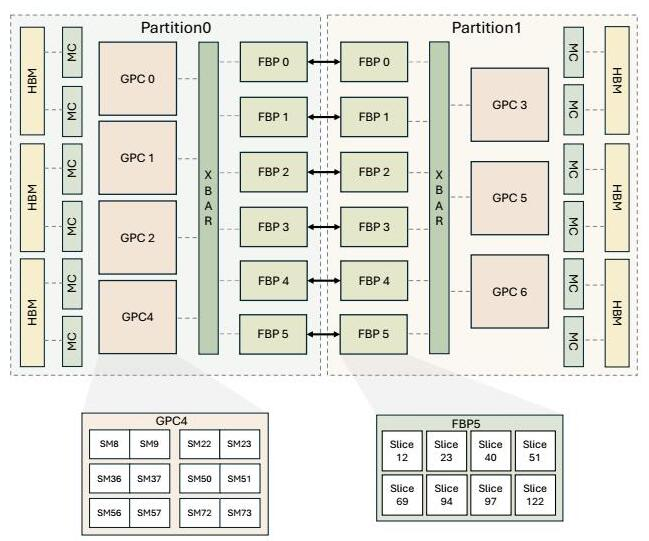
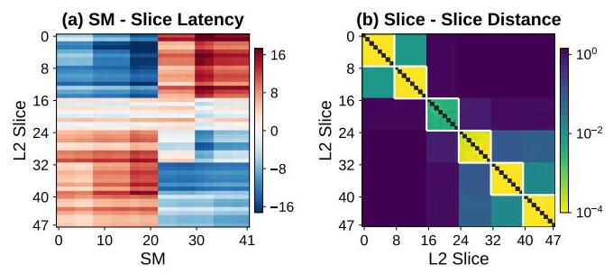
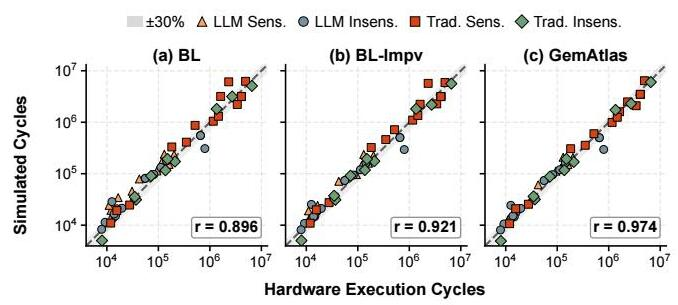

Uncovering the Memory Hierarchy of Modern NVIDIA GPUs for Accurate Simulation — GemAtlas 深度解读
作者：Ziwen Wang、Jiapeng Zhou、Changxi Liu、Dongsheng Wang、Yun Chen；香港科技大学（广州）、清华大学。
发表信息：arXiv 预印本，2026，本文依据2611.13860v1.pdf；所读版本未标明已录用会议。
一句话总结：GemAtlas 用直接控制 GPU 机器指令的微基准，将现代 NVIDIA GPU 的缓存切片、地址路由、替换与跨分区复制机制转化为可验证的模拟模型，使四款 GPU 的平均执行周期预测 MAPE 从 31.69% 降至 22.24%。
阅读范围：完整正文 I–X、表 I–VI、图 1–8 和参考文献；此版本无附录。下文区分实验观察、作者推断及尚未解决的机制；中文全文见同目录 translated.md。
一、问题定义（Problem）
先建立背景：容量相同的缓存，行为也可能完全不同
GPU 的线程块被分配到 Streaming Multiprocessor（SM），SM 又归属于 Graphics Processing Cluster（GPC）。一个 SM 内的 L1 data cache 与程序显式管理的 shared memory（SMEM）共用一块存储资源；多个 SM 通过片上互连访问分布式 L2，L2 后面才是 HBM 等显存。常量加载还有专门的 constant-memory 路径，不能全部当作普通 L1 数据访问。
理解本文至少需要分清三种划分。Partition 决定一个 SM 到 L2 的访问是本地还是跨分区；slice 是可独立寻址、处理请求的缓存切片；set 则是 slice 内决定哪些缓存行彼此争夺有限 way 的集合。Frame Buffer Partition（FBP）位于 partition 和 slice 之间，聚合若干 slice 并连接存储控制器。仅知道“L2 有 60 MiB”无法知道并行服务能力，也无法判断两个地址是否发生冲突。
传统组相联缓存通常让 tag（缓存行身份信息）和 data（实际内容）一一对应。本文发现，现代 GPU 的 L1 tag 数量可以固定，而 data 容量随着 SMEM 分配变化。因此“目标 set 还有空位”不代表“这条数据一定能直接放入”：同一 slice 的数据空间可能已经耗尽，需要驱逐别的 set 中的内容。这正是容量模型无法表达的行为。
本文解决的是已有问题中的机制缺口
这是一项改进并系统整合已有方向的工作，不是首次研究 GPU 缓存。前人已经测过容量、行大小、延迟和部分相联度，也研究过 NoC 与 NUMA 拓扑；Accel-Sim 等模拟器亦能运行真实程序。但现代硬件的 set 映射、slice 路由、替换状态机、跨 partition 副本行为仍缺少统一描述，模拟器常以旧硬件结构配上新容量数字继续使用。
后果并非只是某个参数不准确：若模拟器把 96 个并行 slice 建成 48 个，会低估并发服务能力；若把所有 L2 命中当成同一种延迟，又会忽略跨分区成本。LLM 的 attention、KV-cache 管理、归一化、量化和 MoE 算子有不同的访存模式，单靠 GEMM 不能暴露这些错误。

图 7 提前放在这里，是因为它直接支撑问题的必要性。H20 上旧基线 BL 的 LLM 算子 MAPE 为 39.91%，将公开容量和带宽等参数改正确后的 BL-Impv 仍有 26.59%；加入恢复的机制后降至 20.69%。内存敏感负载的 BL-Impv 误差为 33.46%，GemAtlas 为 19.12%，说明机制缺口有可观测的影响。注意：39.91% 是 H20 的旧基线口径，不能与摘要中的四 GPU、已校准基线平均值 34.04% 混用。
动机评估。动机扎实：作者既给出微观冲突与延迟证据，也给出实际算子的模拟误差。不过 BL 保留 RTX A6000 的不少参数，对 H20 本就不合适，因此主要应看与 BL-Impv 的差距。另一个边界是这里评估单个 kernel 的冷缓存执行，不能直接声称同样改善了完整 LLM 服务系统的端到端预测。
核心 Insight。先把地址送往哪个物理位置与该位置如何替换数据分开，再通过受控的访问序列恢复两者，才能建立可迁移的机制模型。SASS 保证探针确实按预期执行；驱逐集合把冲突限制在单个 set；路由 hash 则把大规模搜索限制在单个 slice。它们形成相互验证的链条，而不是只对整体运行时间做参数拟合。
二、相关工作（Related Work）
原文第 IX 节按“测量方法—架构发现—模拟器影响”组织比较，同时穿插从 GT200、Volta/Turing、Ampere 到 Hopper 的演进。可将研究脉络归为三条。
第一条是组件级微基准。Wong 等、Mei 与 Chu、Jia 等以及后来的 Hopper 测量和 MT4G，逐步给出缓存容量、行大小、延迟、拓扑等信息。这些成果提供了基本参数，但高层 CUDA/PTX 测量会混入编译器重排、依赖指令或冷失效成本；不规则的地址映射又容易与替换行为混淆。GemAtlas 的贡献是通过原生 SASS 和单 set 实验，将这两类因素拆开。例如前人在 H20 上报告 38 或 41 周期 L1 命中，本文给出只计目标加载的 31 周期。
第二条是地址映射和驱逐集合方法。本文继承 group elimination、bit-flip hash recovery，以及用指令取指驱逐统一常量缓存的方法，并非从零发明这些工具。新的关键组合是：先得到 slice 路由，再在对应 partition 的 SM 上、仅用目标 slice 的地址做 group elimination。这解决了大型分区式 L2 中候选池过大以及跨分区复制干扰的问题。
第三条是周期级模拟器和硬件建模。GPGPU-Sim、Accel-Sim、gem5 GPU 模型与 MGPUSim 都需要合理的存储层次模型；Huerta 等近期工作主要推进现代 GPU 核心建模。GemAtlas 将这种细化延伸到存储系统，并扩充真实 LLM 算子覆盖。它没有证明所有 GPU 模拟器都得到相同收益，实证对象是基于 Huerta 等扩展的 Accel-Sim v1.3.0。
原文表 I 对“新发现”“改进已有测量”和“未覆盖”作了区分，这一点比“首次系统逆向”的宣传语更有用：L1 四 slice、tag/data 非对称、SLRU 和常量缓存 Tree-PLRU 属于核心新增发现；GCC 容量等则有前人基础；L2 set-index hash、GCC 的确切替换策略仍未恢复。报告中不应把“系统性”误读为“每个层级都完全破解”。
三、技术挑战（Challenges）
- 探针执行本身不可随意假定。CUDA/PTX 会经过后端优化，且现代 NVIDIA GPU 用指令中的 scoreboard 控制字段管理依赖；访问序列或计时边界改变，就可能把编译器行为误判成硬件行为。
- 同一次失效存在多个解释。目标 set 满、slice 的 data 空间满、另一 partition 的复制流量，都可能改变命中结果；必须用同 set/不同 set、同 slice/不同 slice 等对照逐层排除。
- 逻辑地址目的地不等于物理资源数。H20 的路由先产生 128 个逻辑目的地，再折叠到 96 个物理 slice；按均匀分布假设估计资源数甚至会得到 85.333 这样的非整数。
- 物理地址不可见，搜索空间又大。L2 使用物理地址索引，用户只看到虚拟地址；60 MiB L2 的驱逐集合搜索还容易积累噪声。因此“恢复全部物理地址 hash”不是用户态测量可以无条件完成的事。
- 不同接口可能共享缓存，缓存又可能共享内容类型。MOV、ULDC、LDC 延迟不同，并不意味着对应三块物理缓存；GCC 同时容纳指令和常量，而 CUDA 可见常量空间只有 64 KiB，单用常量数据无法测满 128 KiB GCC。
- 机制正确不代表每个程序误差都下降。多个模拟误差可能互相抵消；需要公开参数校准基线、逐级消融、多 GPU 和逐负载结果，而不能只展示总体相关系数。
四、解决方案（Solution）
整体思路与贯穿示例
GemAtlas 包括参数化 SASS 微基准、自动推断流水线，以及读取恢复参数的 Accel-Sim 扩展。作者称，对支持的目标架构指定架构后即可自动运行探测、推断与配置；推广到未来架构仍需相应 SASS ISA 和工具支持，本文没有测试 Blackwell。
贯穿下面各项设计的例子是：某个 attention kernel 中，一个 SM 反复读 KV 数据块 A、B、C，同时流式读一次性数据 X、Y、Z，并读取缩放系数。为便于解释，暂时选择 A、B、C、X、Y、Z 中相互冲突的缓存行；这是说明机制的人工序列，不是论文声称真实 attention 的每个地址都如此。我们依次问：哪些行真的冲突，反复访问的行会不会受到保护，失效请求去哪个 L2 分区，缩放系数走哪条路径？
1. 用 SASS 把“访问后计时”变成可控实验
作者扩展 cuAssembler 的 ELF 解析和打包，将其 Ampere SM86 支持延伸到 Hopper SM90。探针遵循 prime–evict–probe：先把 A 放入缓存，再访问候选地址，最后测量重新访问 A 的延迟。每条加载分配 W0 依赖，后继指令等待 B0；计时使用 SR_CLOCKLO，并通过依赖链确保计时确实覆盖目标加载。

图 1 每个点取 400 次运行的中位数。前三条冲突行没有驱逐 A，第四条使其失效，最小驱逐集合大小为 4，从而支持四路相联。不同 set 的对照说明变化来自组冲突，而非“访问任何四条数据都会变慢”。这里失效后约 260 周期是该图的实验现象，不应代替后面特定路径下约 276 周期的本地 L2 命中测量。
2. L1：先解决行放在哪里，再解决数据空间和淘汰优先级
四个 slice 和固定的 tag 空间。H20 的 L1 有 4 个 slice，每个有 128 个 set，每 set 4 way，行大小 128 B，分成四个 32 B sector；tag 可覆盖 256 KiB。逐 set 填充时，某个 slice 会在全 L1 尚未满时先发生失效，且受害者只来自同一组四分之一的 set，由此恢复 slice 边界。

图 2 解释了为何给 attention kernel 多分配 SMEM 会减少可缓存的 KV 数据，却不必改变地址映射。原文表 II 的九种配置均满足 L1 data + SMEM = 249 KiB，不是标称 256 KiB。
| 分配/保留的 SMEM | 可用 L1 data | 每 slice 数据行数 |
|---|---|---|
| 8 KiB | 241 KiB | 482 |
| 32 KiB（默认） | 217 KiB | 434 |
| 100 KiB | 149 KiB | 298 |
| 164 KiB | 85 KiB | 170 |
| 228 KiB | 21 KiB | 42 |
即使 kernel 不请求 SMEM，默认仍保留 32 KiB；“不使用 shared memory 就得到 256 KiB L1”在这一平台不成立。图中 7 KiB 的保留区是容量差额的示意，其具体用途没有被证实。
XOR 路由避免把容量当作映射。地址被映射成 2 位 slice 编号和 7 位 set 编号，使用虚拟地址位的 XOR，而不是简单取连续低位。

图 3 中同一行的点表示哪些地址位共同 XOR 成一个输出位；128 B 行内偏移 b0–b6 不参与。作者在 H20 地址范围内恢复 b7–b36 的关系，并用全部 512 个 set 的 15,873 个驱逐集合地址验证，每个地址均落在目标 slice/set。对贯穿例子而言，A 与 X 是否冲突必须通过这种映射判断，不能仅看它们相隔多少 KiB。
tag/data 分离引入跨 set 驱逐。新行有三种情况：目标 set 已满时按本 set 策略替换；set 和 slice data 都有空位时正常分配；set 尚有 tag 空位但 slice data 已满时，从同 slice 的另一个 set 驱逐一行，再给目标 set 分配数据空间。最后一种情况解释了“未填满目标 set 却发生容量失效”。跨 set 受害组选择尚未完全恢复：默认配置重复 13,500 次，最先填入的 27 个 set 被选中概率约为最后 27 个的 2.5 倍，说明既非固定受害组，也不能简单假定均匀随机。
组内采用 SLRU。新行先进入 Probationary（试用）段，重访后进入 Protected（保护）段；保护段最多两行，溢出时把其 LRU 行降到试用段 MRU，实际淘汰发生在试用段 LRU。

对例子中的 A、B、C，只访问一次时它们与 X、Y、Z 一样竞争试用空间；重读 A、B 后，两者可承受流式数据压力；再重读 C，则 A 被降级，但先于 A 进入试用段的 X 会先淘汰。图 4 的价值在于给出了能区分普通 LRU 和 SLRU 的受害者顺序，而不是只观察最终命中率。作者还通过长延迟和重复访问次数控制，说明保护依赖重访与最近性，而非访问次数累积。
3. L2：先恢复空间拓扑，再在正确的位置测冲突
直接读亲和关系，单独测远近路径。SR_AFFINITY 给出 SM 所属 GPC；SR_SW_SCRATCH 用于分辨 partition。H20 的 78 个 SM 被划为 42 和 36 个，分别连接四个和三个 GPC。本地/远端 L2 命中约为 276/446 周期，HBM 访问约为 530–570/700–750 周期，跨 partition 都增加约 170 周期。

图 5 的两侧是 SM 所处的访问位置，不是“两块完全独立的 L2”。对应 FBP 之间存在跨分区复制关系；因此我们的 KV 数据即使已在 L2，也仍可能因为访问 SM 所处的位置不同而付出不同代价。
用原子操作冲突发现非均匀路由。原子操作在目标 slice 上执行，同 slice 的并发操作争用，而不同 slice 可以并行。作者对 128 KiB 范围的 1,024 个行地址做全部有序地址对测试，发现 12,288 对冲突。若错误地假定所有 slice 被均匀命中，会得到：
正确解释是 128 个逻辑目的地映射到 96 个物理 slice，其中 64 个各接收一个逻辑编号，32 个各接收两个。于是碰撞概率为 64×(1/128)² + 32×(2/128)² = 3/256，恰好解释上述非整数。每个 partition 有 48 个 slice，单 slice 容量 640 KiB。
用延迟变化的相关性恢复 FBP。单次绝对延迟混有 slice 相对互连的位置，不能直接分组。作者测一个 partition 内 42 个 SM 到 48 个 slice 的延迟，按 SM 去均值，再比较不同 slice 的跨 SM 延迟向量。

图 6(b) 对角线出现六个 8×8 簇，支持“每 partition 六个 FBP、每 FBP 八个 slice”。这是一种利用多视角共同变化恢复共享路径的方法。两 partition 对应 FBP 的远端与复制后本地延迟相关性大于 0.95，差值约 178 周期，进一步支持一一对应的镜像拓扑；这是测量支持的拓扑推断，不是芯片物理版图证明。
路由 hash 加旋转折叠。路由产生一个 partition 位 p、三个逻辑 FBP 位 f、三个 slice 位 s。例如：
在一个页的首个 128 KiB，逻辑 FBP 0–5 直接映射，6、7 折叠到物理 0、1，同时 slice 编号变成 s XOR 4。后续每 128 KiB，额外负载依次轮换到物理 FBP 对 2–3、4–5；因此 128 KiB 窗口可不均衡，连续 384 KiB 才实现这种折叠负载的均衡。
这里必须保留原文第 V-C 节的限定：作者在 128 MiB 虚拟窗口内恢复用于实验的映射，公开的硬件公式仅报告常见 2 MiB 大页中虚实地址相同的低 21 位。它不是任意分配、任意物理页上的完整物理 hash，更不是 L2 set-index 函数。模拟模型需要面对的未恢复部分仍存在。
hash 指导驱逐集合搜索。只保留目标 slice 的候选地址，并从同 partition 的 SM 测量，既减少搜索量，又降低复制流量干扰。在 120 MiB 候选池的 983,040 行中，目标 slice 只剩 10,542 行，约缩小 93 倍。最终每个 L2 set 为 16 way；900 轮随机重访顺序实验中，新增行总驱逐最久未使用者，支持标准 LRU。
跨 partition 复制保留 set 冲突关系，但替换状态独立。同一个 set 的 16 条行复制到另一 partition 后，仍竞争一个对应 set，且允许 16 条全部是远端副本，没有额外的副本 way 配额。远端读取在 home partition 相当于一次命中并提升到 MRU，在副本端相当于插入 MRU；一边的驱逐不会直接驱逐另一边或改变其 LRU 顺序。对我们的 KV 数据，这同时影响命中延迟、后续驻留和副本占用的容量。论文所谓“set-level coherence”指这些组映射与状态关系，不能解读成一次访问复制整个 set。
4. 常量层次：通过交叉访问确认共享，再用指令测满 GCC
缩放系数等常量可能通过 MOV、ULDC 或 LDC 取出。三种路径命中延迟分别为 2、15、25 周期，但 MOV 预热的数据能被 ULDC 命中，两者也能相互驱逐；它们与 LDC 的交叉预热则不成立。因此 IMC 与 DCC 对应同一物理缓存，而 IDC 独立。
| 本文层级称呼 | 主要路径/位置 | 几何与策略 | 命中延迟 |
|---|---|---|---|
| L0 constant | MOV/ULDC；推测在 SMSP | 2 KiB、64 B 行、8 set×4 way、Tree-PLRU | 2/15 周期 |
| L1 constant | LDC；跨 warp 实验证实 SM 共享 | 2 KiB、64 B 行、8 set×4 way、Tree-PLRU | 25 周期 |
| GCC，L1.5 | 同 GPC 的 SM 共享，常量与指令统一 | 128 KiB、256 B 行、64 set×8 way | 57 周期 |
L0 和 L1 的组索引均为 (offset/64) mod 8。填满 A、B、C、D 后重访 A，再插入 E，LRU 应淘汰 B，但实测淘汰 C；更多序列吻合四路、三位二叉树 Tree-PLRU。L0 位于 SMSP 是作者基于 2 周期延迟作出的推测，受汇编工具限制未直接验证，不能当作与 L1 的 SM 共享位置同等强度的证据。
GCC 的难点是 64 KiB 用户常量不足以填满它。作者用固定间距分支链访问映射到同一 GCC set 的指令行，与常量行一起占位：八行时不淘汰，第九行必然淘汰，从而确定八路相联，结合 64 set 和 256 B 行得 128 KiB。GCC 替换行为不符合标准 LRU、FIFO 或 Tree-PLRU，详细策略留待后续研究。
与已有方案的对比和实现边界
GemAtlas 的优势是“可控制的探针—可定位的冲突—能解释结果的结构模型”贯通：比单纯 pointer chasing 更能区分组冲突与容量不足，比全局候选集消除更适合大容量 L2，比只调容量带宽的模型更能解释并行性和数据位置。不过它仍依赖架构相关 SASS 支持；L2 完整物理映射、跨 set 受害组选择、GCC 替换、L0 精确位置并未全部解决。原文声称完整配置纳入所有恢复机制，但对这些未知部分采用何种近似没有同样详细的说明，这是复现时需要检查的接口。
五、实验评估（Experiments）
实验设定：比较的到底是什么
硬件为 H20、H100（Hopper）、A800（Ampere）、RTX 4090（Ada），使用 CUDA 12.8 与扩展后的 cuAssembler。GemAtlas-Bench 有 53 个负载：25 个传统 GPU benchmark，加上 28 个来自 vLLM、PyTorch、FlashAttention-3 的 LLM 算子；张量尺寸依据 Qwen3-30B-A3B 配置。它们覆盖 attention、归一化、激活、KV-cache 管理、token 处理、量化、MoE，但不是完整模型的端到端训练或服务测试。
实机使用 Nsight Compute 采集 kernel 周期，锁定时钟、每次 kernel 前清缓存，重复五次取均值；模拟器同样从冷缓存开始。主要指标是周期误差的 MAPE：
它按负载等权，不能读成整个应用总运行时间的误差。作者还报告有符号逐负载误差、Pearson 相关性和 ±30% 误差带内的负载数。
BL 使用扩展 Accel-Sim 的 RTX A6000 模型，只改目标 GPU 的 SM 数、时钟及 SMEM 等；例如仍保留 6 MiB L2。BL-Impv 再按公开资料将 H20 的 L2 改成 60 MiB、显存带宽改成 4 TB/s，但仍保留单 partition、48 slice、IPOLY 路由等简化。随后依次替换 L1D、L2D 和常量层次。真正隔离逆向发现贡献的比较是 GemAtlas 对 BL-Impv。
主要结果与消融
| GPU | BL-Impv MAPE | +L1D | +L1D+L2D | 完整 GemAtlas |
|---|---|---|---|---|
| H20 | 27.6% | 27.4% | 20.6% | 20.0% |
| H100 | 37.7% | 37.4% | 21.9% | 21.3% |
| A800 | 32.5% | 32.3% | 29.3% | 28.0% |
| RTX 4090 | 29.0% | 28.5% | 20.2% | 19.7% |
| 四 GPU 平均（原文表 V 舍入值） | 31.7% | 31.4% | 23.0% | 22.2% |
原文未舍入的总体平均为 31.69%→22.24%，下降 9.45 个百分点，相对下降约 29.8%。LLM 算子平均为 34.04%→23.98%，内存敏感负载平均为 36.33%→20.61%。这不是程序本身获得约 30% 加速，而是模拟误差缩小。
H20 的细粒度消融指向 L2 并行性。总体 MAPE 依次为 27.58%→27.36%→20.62%→20.04%。在 L2 内继续拆分：48 改 96 slice 后降至 22.14%，再换路由 hash 降至 21.83%，最后加 partition 亲和、远近延迟及复制模型降至 20.62%。slice 数贡献最大，说明只改 L2 容量会保留严重的服务并行度错误。作者将 partition 相关机制打包，因为只加入其中一部分不对应实际硬件；这也意味着无法独立分离每项复制或延迟机制的贡献。
真实算子的收益有分布差异。图 7 中传统负载从 28.69% 降至 19.31%，LLM 从 26.59% 降至 20.69%。作者把相邻模型配置周期变化至少 5% 的负载定义为内存敏感，共 26 个，余下 27 个不敏感；前者 MAPE 33.46%→19.12%，后者 21.91%→20.91%。这支持存储层次是敏感组的重要误差来源，但“敏感”由本次模型改动定义，不是完全独立的硬件分类。
常量层次总体占比小，但对特定 kernel 很重要。加入常量层次使总体 MAPE 20.62%→20.04%；53 个负载中 52 个到达 L2 的常量请求减少，总量减少 71.15%。parboil-mri-q 的常量访问占 L2 请求 6.16%，GCC 将此类请求减少 95.35%，周期误差从 +18.70% 改为 +2.24%。

图 8 显示相关系数从 BL 的 0.896、BL-Impv 的 0.921 提升到 0.974；误差带内负载数从 34、37 增至 42。对数坐标方便观察不同规模 kernel，但高相关性并不保证每个短 kernel 准确，还需结合 MAPE 和原文表 VI。
跨代结构验证也有具体差异。四 GPU 的 L1 都有四 slice、XOR 映射和 SLRU，但 H20/H100 每 slice 为 128 set×4 way，A800 为 64×6，RTX 4090 为 64×4；L2 分别为 2×6×8、2×5×8、2×5×4、1×6×6 个 partition×FBP×slice。RTX 4090 只有一个 partition，不能套用 H20 的跨分区结论；其 FBP 折叠轮换间距也由 128 KiB 变为 32 KiB。
结论支撑性与不足
这组实验相当有力地支持“详细存储机制可以改善现代 GPU 模拟”，尤其 L2 slice 数和 partition 模型的增量验证给出了原因，四款 GPU 则降低了只对 H20 调参的疑虑。但还不能支持“模型已经普遍准确”：A800 总体仍有 28.0% MAPE；H20 的 vllm-rmsnorm 仍高估 93.95%，paged-attn-v2 仍高估 59.78%，torch-ffn-gate 仍低估 62.91%。
并非每个负载都变好：torch-softmax-vocab 从 BL-Impv 的 +2.39% 变为 +19.24%，lonestar-bfs 从 +19.77% 变为 +30.10%。这些反例说明改正某部分硬件模型可能打破原来的误差抵消，不能用总体均值替代逐负载判断。
复现和外推还有三处边界。第一，冷缓存单 kernel 测量没有覆盖连续 kernel 的缓存继承、多进程干扰或完整 LLM 运行期。第二，微基准对关键机制有数百到上万次重复，但主性能表未给出误差条和跨运行方差；L2 驱逐集合的 93 倍是候选空间缩减，不是已测得的总运行时间加速。第三，第 VII-E 节给 parboil-stencil 的局部消融示例为 −29.3%→−10.9%，表 VI 的阶段模型则是 L1D −14.30%→L1D+L2D −10.87%；前者应按 L2 内部消融语境理解，不应当作表 VI 同一基线的直接比较。
六、附加洞察（Side Findings）
结论 1：本组负载里，L1 建模的总体收益小，往往是数据复用距离不足以区分两种组织，而不是细节无关紧要。
出处：第 VII-D 节。 作者先测到 53 个负载中 22 个全局加载的 L1 命中率低于 10%；另 21 个中，旧模型和新模型都与硬件命中率相差不超过两个百分点。继续查看 trace 后，其中 20 个的重访 sector 有超过 99% 在不到 64 KiB 的其他数据访问后就再次访问，两种缓存组织都容易保留。唯一明显依赖组织的 polybench-gesummv 有 16 KiB stride、64–128 KiB 复用距离，XOR 映射减少冲突，命中率由 86.10% 提至 90.22%。推理链条将总体小收益解释为工作负载的局部性分布，而不是否定恢复 L1 机制的价值；该归纳仍局限于本文样本。
结论 2：L1 少掉的 7 KiB 不能用组内替换策略解释。
出处：第 VIII 节和第 IX 节对 Jia 等工作的比较。 前人在 Volta/Turing 观察到类似缺口并猜测与新替换策略有关；本文逐行填充时，在任何 set 超过四路之前就出现 data 容量不足，且九种 SMEM 配置下缺口固定。因此作者排除了“组内达到相联度后按新策略替换”这一解释。这里能确定的是该解释不成立；作者进一步猜测 7 KiB 用于缓存尚未完成跨 set 驱逐的入站行，尚无直接证据，不能把猜测升格为已知硬件用途。
结论 3：恢复的 L2 路由不仅用于模拟，也能指导一次真实的数据放置优化。
出处：第 VIII 节 L2-aware data placement。 知道数据的 home partition 和访问 SM 的亲和关系后，作者让 H20 vLLM paged-attention decode 的数据尽量放在本地 partition，消除 99% 的跨分区请求，并让更多 KV 数据留在 L2，实测 kernel 加速 1.10–1.12 倍。论证链是“匹配位置→减少远端访问和副本占用→降低运行时间”。这是一个落地案例，但并未分别量化延迟减少和容量回收的独立贡献；将热点扩散到 384 KiB 以均衡 FBP 则只是作者提出的建议，不是另一个已验证结果。
七、总结与个人评价（Wrap-up）
GemAtlas 最有价值的贡献，是把“现代 GPU 缓存是黑盒”拆成了可以验证的问题：地址怎样路由、相互冲突的行如何替换、远端副本落在哪里，然后将答案放入模拟器检验其影响。四 GPU 平均 MAPE 从 31.69% 降至 22.24%，其中 L2 并行度与分区结构是最大的精度收益来源。
最大的亮点是因果隔离：SASS 控制、驱逐集合、延迟相关性和逐层消融互相补强；最大的不足是“较完整的框架”仍包含多个未确定机制，且剩余模拟误差对部分关键 LLM 算子依然很大。后续最值得推进的是公布未知机制的模型近似及其敏感性，并在跨 kernel 的真实 LLM 执行中验证缓存驻留、数据放置和端到端收益。
八、章节脉络与段落速览（Structure Map）
下列 ¶ 编号在各节/小节内重新计数，按正文自然段划分；嵌入段内的公式、代码和列表并入所属段，图注与独立表格单列定位而不计自然段。
- Abstract：概述机制缺口、逆向框架与模拟精度收益。
- ¶1 新兴 AI 负载使旧存储模型的失真更突出。
- ¶2 GemAtlas 用 SASS 探针恢复多层缓存的细粒度行为。
- ¶3 将发现集成到模拟器后改善四 GPU 与 LLM 算子的预测。
- I. INTRODUCTION：从 GPU 工作负载演进引出系统性存储逆向的必要性。
- ¶1 GPU 应用不断扩展，而存储性能进步相对滞后。
- ¶2 LLM 参数和 KV-cache 增加容量与带宽压力。
- ¶3 现有逆向偏重 SM 核心，存储发现仍零散。
- ¶4 GemAtlas 统一恢复并验证多级缓存机制，随后列出五项贡献。
- 表 I：区分各层机制的新发现、改进与未覆盖项。
- II. BACKGROUND AND MOTIVATION：解释硬件层次和既有模拟工作的缺口。
- ¶1 GPU Architecture and Memory Hierarchy 介绍 GPC、SM、常量路径及分布式 L2。
- ¶2 Undocumented Memory Hierarchy Details 说明高层参数无法支持确定性的访存优化。
- ¶3 既有模拟器结构简化且真实 LLM 算子覆盖不足。
- ¶4 旧模型在 LLM 和其中的敏感算子上出现较高预测误差。
- ¶5 系统逆向与建模共同构成本文动机。
- III. REVERSE ENGINEERING METHODOLOGY：说明自动框架与可控探针。
- A. The GemAtlas Framework：把微基准、推断和模拟配置串联。
- ¶1 三组件流水线自动生成各层参数并配置模拟器。
- ¶2 Test Platform 说明四款 GPU、CUDA 和汇编工具。
- B. SASS-Level Microbenchmarking：解释必须控制原生指令的原因。
- ¶1 CUDA/PTX 编译和 scoreboard 机制影响测量确定性。
- ¶2 SASS 提供依赖控制与固定代码布局，并需扩展 cuAssembler 以支持 Hopper。
- C. Case Study: L1 Eviction Set Construction：用 L1 驱逐集合演示方法。
- ¶1 group elimination 与时延对照确定稳定的四地址冲突集合。
- ¶2 Listing 1 的 prime–evict–probe 与依赖链实现受控计时。
- 图 1、Listing 1：分别给出结果和探针实现。
- IV. L1 DATA CACHE：恢复 L1 结构、映射及替换。
- ¶1 本节概括四 slice、固定 tag 和 SLRU 的发现。
- A. Physical Organization and Tag-Data Asymmetry：将逻辑 tag 与物理数据容量分开。
- ¶1 确定行、sector、相联度及命中延迟。
- ¶2 Accurate Capacity Measurement 按行测出不同 SMEM 配置下的实际容量。
- ¶3 The 4-Slice Topology 从局部容量驱逐恢复四 slice。
- ¶4 Address Indexing and XOR Hash 将地址映射定义为九位逻辑索引。
- ¶5 bit-flip 分析恢复参与各索引位的地址位。
- ¶6 用所有 set 的驱逐集合验证映射。
- ¶7 Hardware Asymmetry: Tag Array vs. Data Array 说明固定 tag 与缩小 data 的不一致。
- ¶8 三种分配情况及重复填充实验揭示跨 set 驱逐与受害组偏好。
- 表 II、图 2–3：对应容量、组织及 XOR 映射。
- B. L1 Cache Set Replacement Policy：逐步识别 SLRU 状态转移。
- ¶1 引入试用段和保护段。
- ¶2 Listing 2 用选择性重访与流式插入测驻留。
- ¶3 Streaming-only baseline 无重访时表现为试用段内 LRU。
- ¶4 Stepwise promotion into Protected 重访的两条行可共同得到保护。
- ¶5 Priority exchange on protected overflow 第三次晋升暴露两行保护容量和降级位置。
- ¶6 Immediate promotion on re-access 排除等待时间与访问次数累计解释。
- ¶7 Final replacement policy 汇总完整 SLRU 规则。
- 图 4、Listing 2：呈现状态转移和访问序列。
- V. Distributed L2 Cache：从拓扑与路由推进到组级复制行为。
- ¶1 概括 H20 的分区式 L2 和本节分析路径。
- A. Partition-Level Topology and SM Affinity：确定计算位置与远近访问代价。
- ¶1 Mapping SMs to GPCs and Partitions 用特殊寄存器恢复 SM、GPC 与 partition 关系。
- ¶2 SM-to-Partition Latency 对比本地和远端 L2/HBM 延迟。
- 图 5：汇总拓扑。
- B. L2 Slice and FBP Organization：利用争用和相关性分层识别物理资源。
- ¶1 Determining the Number of Physical L2 Slices 用原子操作争用区分相同 slice。
- ¶2 对全部有序地址对测碰撞并建立均匀分布估计式。
- ¶3 非整数估计揭示 128 个逻辑目的地向 96 个 slice 的折叠。
- ¶4 Identifying FBP Groupings via Cross-SM Correlation 从跨 SM 延迟向量恢复六组八 slice。
- ¶5 Cross-Partition FBP Correspondence 远端与本地延迟相关性支持 FBP 镜像关系。
- 图 6：给出相对延迟矩阵和相关距离簇。
- C. Complete Memory Interleave Hash Recovery：恢复有限可观察地址范围内的路由与折叠。
- ¶1 说明物理地址不可见的限制并列出页内路由公式。
- ¶2 七位逻辑目的地需要 remap，首次窗口的折叠保留 partition 位。
- ¶3 折叠目标每窗口轮换以平衡 FBP，且重现测得碰撞数。
- D. Slice-Constrained Eviction-Set Construction：缩小搜索并排除跨分区干扰。
- ¶1 大容量和 coherence 使既有消除算法失效。
- ¶2 先按 slice 筛选再在本地 partition 运行消除算法。
- ¶3 最小驱逐集合和随机重访实验支持十六路 LRU。
- E. Cross-Partition Coherence at Cache-Set Granularity：识别副本映射和两侧替换状态。
- ¶1 副本保留 set 冲突关系且不另设副本容量限额。
- ¶2 两侧独立维护 LRU，复制分别表现为源端命中与目的端插入。
- VI. CONSTANT MEMORY HIERARCHY：恢复三层常量缓存及跨 GPU 参数。
- ¶1 概括 L0、L1 与 GPC 共享 GCC。
- A. The Intra-SM Hierarchy: L0 and L1 Constant Caches：通过指令与 warp 交叉探测识别结构。
- ¶1 介绍 IMC、DCC、IDC 路径及不同指令延迟。
- ¶2 DCC and IMC Share a Single Physical Cache 交叉预热与驱逐支持物理统一。
- ¶3 Cache Placement and Structural Parameters 确认 IDC 的 SM 共享并说明 L0 位置仍属推测。
- ¶4 测得 L0/L1 的相同几何和线性 set 索引。
- ¶5 Tree-PLRU Replacement Policy 用受害者反例区别 LRU 与 Tree-PLRU。
- ¶6 三位二叉树状态解释观察到的替换序列。
- Listing 3：给出选择性重访探针。
- B. The GPC-Level Unified Cache (GCC)：利用指令与数据共享结构测出完整容量。
- ¶1 跨 SM 命中确认 GCC 为 GPC 共享层。
- ¶2 Extracting GCC Characteristics via Instruction Insertion 先测行大小与 set 索引。
- ¶3 常量容量限制迫使探针通过分支链引入同 set 指令行。
- ¶4 第九行引发驱逐从而确定八路与总容量。
- ¶5 Non-Standard Replacement Policy 观察排除常见策略但尚未恢复完整状态机。
- C. Reverse Engineering Other GPUs：比较四款 GPU 的共有机制与参数差异。
- ¶1 相同探针适用于另外三 GPU，RTX 4090 的单 partition 和折叠间距不同。
- 表 III：列出跨 GPU 的结构参数。
- VII. MODELING AND EVALUATION：将恢复机制加入模拟器并检验预测。
- ¶1 指明采用的 Accel-Sim 版本与 Huerta 等扩展。
- A. Supporting Real-World LLM Benchmarks：扩充多类 LLM 算子覆盖。
- ¶1 说明 25 个传统负载及 28 个 LLM 算子的来源和配置。
- B. Evaluation Methodology：建立硬件测量、基线和增量配置。
- ¶1 Hardware measurement 对齐锁频、冷缓存和五次均值。
- ¶2 Baselines 区分旧 A6000 结构基线与公开参数校准基线。
- ¶3 Configurations 依次加入 L1、L2 和常量模型。
- 表 IV：展示 H20 模型参数差异。
- C. Performance Accuracy：比较总体、分组、相关性和跨 GPU 精度。
- ¶1 所有负载的逐级 MAPE 下降中 L2 贡献最大。
- ¶2 传统、LLM、敏感与不敏感组呈现不同收益。
- ¶3 Pearson 相关性和误差带内负载数改善。
- ¶4 Other GPUs 另外三款 GPU 同样获得总体精度提升。
- 表 V、图 7–8：分别呈现跨 GPU、分组及相关性结果。
- D. Impact of L1D Modeling：用命中率和复用距离解释总体收益较小。
- ¶1 大多数负载不能区分两种 L1，而 gesummv 暴露映射影响。
- E. Impact of Distributed L2 Modeling：进一步拆解 L2 的精度贡献。
- ¶1 slice 数、路由和 partition 机制逐步改善模型，其中 slice 并行度最关键。
- 表 VI：列出全部 H20 负载的硬件周期及各配置误差。
- F. Impact of Constant-Memory Modeling：定位 GCC 的总体和个例作用。
- ¶1 常量请求总体占比较低，但 mri-q 从 GCC 明显获益。
- VIII. DISCUSSION：讨论软件优化案例和硬件设计启发。
- ¶1 逆向发现还可用于模拟之外的优化。
- ¶2 L2-aware data placement 本地放置带来 decode 加速并启发 FBP 均衡布局。
- ¶3 Decoupled L1 tags and data 讨论固定 tag、容量缺口猜测与可变行设计建议。
- IX. RELATED WORK：将本文方法和发现放回既有研究。
- ¶1 既有 GPU 组件、互连及现代拓扑研究尚未统一到 set 级。
- ¶2 区分继承方法与五项方法改进。
- ¶3 按 L1、L2、常量缓存解释对先前测量的修正和扩展。
- ¶4 总结新增机制并重新解释此前的部分现象。
- ¶5 多类模拟器仍缺少忠实的存储机制建模。
- X. CONCLUSION：归纳机制恢复及四 GPU 模拟精度收益。
- ¶1 汇总 SASS 方法、多层缓存发现和整体结果。
- REFERENCES：57 条参考文献覆盖硬件逆向、缓存算法、模拟器、GPU 工具与 LLM 负载来源。
图像均来自原论文并保留原编号，表格摘录和计算值在正文标明口径；本报告没有将作者的后续工作或猜测作为已验证结果。